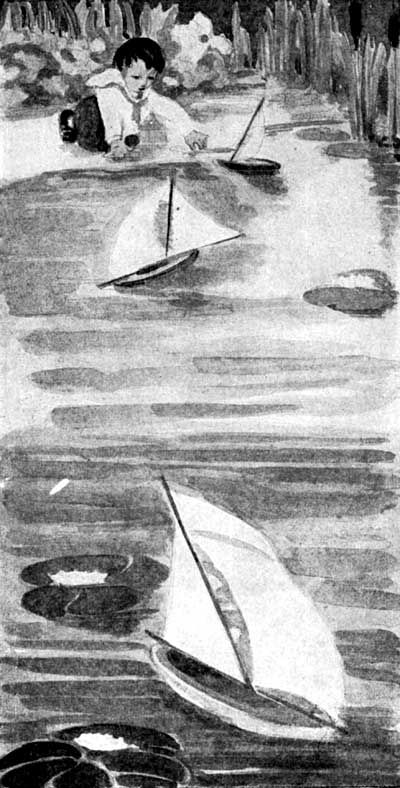
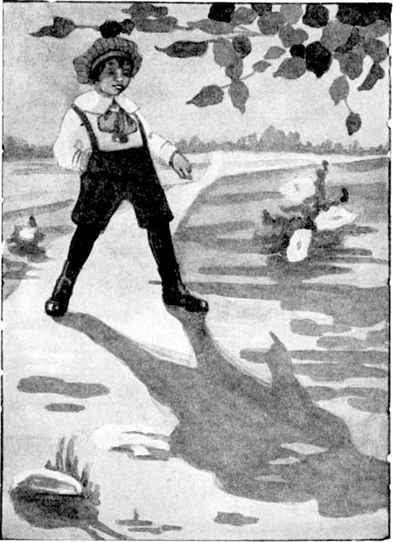

E-text prepared by Joseph R. Hauser, Sankar Viswanathan,
and the Project Gutenberg Online Distributed Proofreading Team
(http://www.pgdp.net/)
There are several editions of this ebook in the Project Gutenberg collection. Various characteristics of each ebook are listed to aid in selecting the preferred file.
Click on any of the filenumbers below to quickly view each ebook.
|
19722 | (Published in 1916; Black and White illustrations by M. Sheldon)
|
|
25608 | (Published in 1905; Single Tone illustrations by B. C. Pease)
|
|
25609 | (Published in 1905; Illustrations in Color by J. W. Smith)
|
|
25610 | (Published in 1895; Black and White illustrations by C.Robins)
|
|
25611 | (Publication date unknown; Black and White illustrations)
|
|
25617 | (Published in 1900; Illustrations in Color by Mars and Squire)
|
|
28722 | (Published in 1919; Illustrations in Color by Maria L. Kirk)
|
A CHILD'S
GARDEN
of VERSES
By
ROBERT LOUIS STEVENSoN
ILLUSTRATED BY
MYRTLE SHELDON
M. A. DONOHUE & CO.
CHICAGO
Copyright 1916
By
M. A. DONOHUE
AND
COMPANY
BY WAY of
INTRODUCTION
Nothing has ever been written that appeals to a child's nature more
than "A CHILD'S GARDEN OF VERSES." It is written in a simple verse
that a child can readily understand. It was one of the earlier efforts
of the author, Robert Louis Stevenson, a Scotchman by birth, who,
owing to ill-health, became a world traveler. During his travels he
visited the United States, spending a year among our famous resorts.
Later he visited Australia and the South Sea Islands, which climate
agreed with him to such an extent that he finally settled down and
made his home on the island of Samoa. He continued his travels from
that point, often visiting the Hawaiian Islands, Australia and New
Zealand. He formed a strong friendship for the natives of Samoa, and
did a great deal to improve their conditions. He died on the island,
and at his own request was buried on the top of one of its beautiful
mountains, with the following lines upon his tomb:
Here he lies, where he longed to be;
Home is the Sailor, home from the sea,
And the hunter home from the hill.
CONTENTS
A CHILD'S
GARDEN of
VERSES
[10]
BED IN SUMMER
In winter I get up at night,
And dress by yellow candle light.
In summer quite the other way,
I have to go to bed by day.
I have to go to bed and see
The birds still hopping on the tree,
Or hear the grown-up people's feet,
Still going past me in the street.
And does it not seem hard to you,
When all the sky is clear and blue,
And I should like so much to play,
To have to go to bed by day?
[11]
YOUNG NIGHT THOUGHT
All night long and every night,
When my mamma puts out the light
I see the people marching by,
As plain as day, before my eye.
Armies and emperors and kings,
All carrying different kinds of things,
And marching in so grand a way,
You never saw the like by day.
So fine a show was never seen
At the great circus on the green;
For every kind beast and man
Is marching in that caravan.
At first they move a little slow,
But still the faster on they go,
And still beside them close I keep
Until we reach the Town of Sleep.
[12]
Three of us afloat in the meadow by the swing.
Three of us aboard in the basket on the lea.
Winds are in the air, they are blowing in the spring,
And waves are on the meadow like the waves there are at sea.
Where shall we adventure, to-day that we're afloat,
Wary of the weather and steering by a star?
Shall it be to Africa, a-steering of the boat,
To Providence, or Babylon, or off to Malabar?
[13]
Hi! but here's a squadron a-rowing on the sea—
Cattle on the meadow a-charging with a roar!
Quick, and we'll escape them, they're as mad as they can be,
The wicket is the harbor and the garden is the shore.
[14]
FAREWELL TO THE FARM
The coach is at the door at last;
The eager children, mounting fast
And kissing hands, in chorus sing:
Good-bye, good-bye, to everything!
To house and garden, field and lawn,
The meadow-gates we swung upon,
[15]To pump and stable, tree and swing,
Good-bye, good-bye, to everything!
And fare you well for evermore,
O ladder at the hayloft door,
O hayloft where the cobwebs cling,
Good-bye, good-bye, to everything!
Crack goes the whip, and off we go;
The trees and houses smaller grow;
Last, round the woody turn we swing:
Good-bye, good-bye, to everything!
[16]
THE LAND OF COUNTERPANE
When I was sick and lay a-bed,
I had two pillows at my head,
And all my toys beside me lay
To keep me happy all the day.
And sometimes for an hour or so
I watched my leaden soldiers go,
With different uniforms and drills,
Among the bed-clothes, through the hills.
And sometimes sent my ships in fleets
All up and down among the sheets;
Or brought my trees and houses out,
And planted cities all about.
I was the giant great and still
That sits upon the pillow-hill,
And sees before him, dale and plain
The pleasant Land of Counterpane.
[17]
FAIRY BREAD
Come up here, O dusty feet!
Here is fairy bread to eat
Here in my retiring room,
Children, you may dine
On the golden smell of broom
And the shade of pine
And when you have eaten well,
Fairy stories hear and tell.
[18]
ESCAPE
AT
BEDTIME
The lights from the parlor and kitchen shone out
Through the blinds and the windows and bars;
And high over head and all moving about,
There were thousands of millions of stars.
There ne'er were such thousands of leaves on a tree,
Nor of people in church or the Park,
As the crowds of the stars that looked down upon me,
And that glittered and winked in the dark.
[19]
The Dog, and the Plough, and the Hunter and all,
And the star of the sailor, and Mars,
These shone in the sky, and the pail by the wall
Would be half full of water and stars.
They saw me at last, and they chased me with cries,
And they soon had me packed into bed;
But the glory kept shining and bright in my eyes,
And the stars going round in my head.
[20]
A GOOD PLAY
We built a ship upon the stairs
All made of the back-bedroom chairs,
And filled it full of sofa pillows
To go a-sailing on the billows.
We took a saw and several nails,
And water in the nursery pails;
And Tom said, "Let us also take
An apple and a slice of cake;"—
Which was enough for Tom and me
To go a-sailing on, till tea.
We sailed along for days and days,
And had the very best of plays;
But Tom fell out and hurt his knee,
So there was no one left but me.
[21]
MARCHING SONG
Bring the comb and play upon it!
Marching, here we come!
Willie cocks his highland bonnet,
Johnnie beats the drum.
Mary Jane commands the party,
Peter leads the rear;
Feet in time, alert and hearty,
Each a Grenadier!
All in the most martial manner
Marching double-quick;
While the napkin like a banner
Waves upon the stick!
Here's enough of fame and pillage,
Great commander Jane!
Now that we've been round the village,
Let's go home again.
[22]

"Boats of mine a-boating"
[23]
WHERE GO THE BOATS?
Dark brown is the river,
Golden is the sand.
It flows along for ever,
With trees on either hand.
Green leaves a-floating,
Castles of the foam,
Boats of mine a-boating—
Where will all come home?
On goes the river
And out past the mill,
Away down the valley,
Away down the hill.
Away down the river,
A hundred miles or more,
Other little children
Shall bring my boats ashore.
[24]
THE HAYLOFT
Through all the pleasant meadow-side
The grass grew shoulder-high,
Till the shining scythes went far and wide
And cut it down to dry.
These green and sweetly smelling crops
They led in wagons home;
And they piled them here in mountain-tops
For mountaineers to roam.
Here is Mount Clear, Mount Rusty-Nail,
Mount Eagle and Mount High;—
The mice that in these mountains dwell,
No happier are than I!
O what a joy to clamber there,
O what a place for play,
With the sweet, the dim, the dusty air,
The happy hills of hay!
[25]
AUNTIE'S
SKIRTS
Whenever Auntie moves around
Her dresses make a curious sound.
They trail behind her up the floor,
And trundle after through the door.
[26]
The moon has a face like the clock in the hall;
She shines on thieves on the garden wall,
On streets and fields and harbor quays,
And birdies asleep in the forks of the trees.
The squalling cat and the squeaking mouse,
The howling dog by the door of the house,
The bat that lies in bed at noon,
All love to be out by the light of the moon.
But all of the things that belong to the day
Cuddle to sleep to be out of her way;
And flowers and children close their eyes
Till up in the morning the sun shall rise.
[27]
THE COW
The friendly cow all red and white,
I love with all my heart:
She gives me cream with all her might,
To eat with apple-tart.
She wanders lowing here and there,
And yet she cannot stray,
All in the pleasant open air,
The pleasant light of day.
And blown by all the winds that pass
And wet with all the showers,
She walks among the meadow grass
And eats the meadow flowers.
[28]
FOREIGN LANDS
Up into the cherry tree
Who should climb but little me?
I held the trunk with both my hands
And looked abroad on foreign lands.
I saw the next door garden lie,
Adorned with flowers, before my eye,
And many pleasant places more
That I had never seen before.
[29]
I saw the dimpling river pass
And be the sky's blue looking-glass;
The dusty roads go up and down
With people tramping into town.
If I could find a higher tree
Farther and farther I should see,
To where the grown-up river slips
Into the sea among the ships.
To where the roads on either hand
Lead onward into fairy land,
Where all the children dine at five,
And all the playthings come alive.
[30]
SYSTEM
Every night my prayers I say,
And get my dinner every day;
And every day that I've been good
I get an orange after food.
The child that is not clean and neat,
With lots of toys and things to eat,
He is a naughty child, I'm sure—
Or else his dear papa is poor.
[31]
AT THE SEASIDE
When I was down beside the sea,
A wooden spade they gave to me
To dig the sandy shore.
My holes were hollow like a cup,
In every hole the sea came up,
Till it could hold no more.
[32]
The world is so full of a number of things,
I'm sure we should all be as happy as kings
[33]
THE LAND OF NOD
From breakfast on through all the day
At home among my friends I stay,
But every night I go abroad
Afar into the Land of Nod.
All by myself I have to go,
With none to tell me what to do—
All alone beside the streams
And up the mountain-sides of dreams.
The strangest things are there for me,
Both things to eat and things to see,
And many frightening sights abroad
Till morning in the Land of Nod.
Try as I like to find the way,
I never can get back by day,
Nor can remember plain and clear
The curious music that I hear.
[34]
WINDY
NIGHTS
Whenever the moon and stars are set,
Whenever the wind is high,
All night long in the dark and wet,
A man goes riding by.
Late in the night when the fires are out,
[35]
Why does he gallop and gallop about?
Whenever the trees are crying aloud,
And ships are tossed at sea,
By, on the highway, low and loud,
By at the gallop goes he.
By at the gallop he goes, and then
By he comes back at the gallop again.
[36]
TIME TO RISE
A birdie with a yellow bill
Hopped up on the window sill,
Cocked his shining eye and said:
'Ain't you 'shamed, you sleepy-head?'
[37]
RAIN
The rain is raining all around.
It falls on field and tree,
It rains on the umbrellas here,
And on the ships at sea.
[38]
FOREIGN CHILDREN
Little Indian, Sioux or Crow,
Little frosty Eskimo,
Little Turk or Japanee,
O! don't you wish that you were me?
You have seen the scarlet trees
And the lions over seas;
You have eaten ostrich eggs,
And turned the turtles off their legs.
Such a life is very fine,
But it's not so nice as mine:
You must often, as you trod,
Have wearied not to be abroad.
You have curious things to eat,
I am fed on proper meat;
You must dwell beyond the foam,
But I am safe and live at home.
[39]
LOOKING FORWARD
When I am grown to man's estate
I shall be very proud and great,
And tell the other girls and boys
Not to meddle with my toys.
[40]
MY SHADOW
I have a little shadow that goes in and out with me,
And what can be the use of him is more than I can see.
He is very, very like me, from the heels up to the head;
And I see him jump before me, when I jump into my bed.
The funniest thing about him is the way he likes to grow—
Not at all like proper children, which is always very slow;
For he sometimes shoots up taller, like an india-rubber ball,
And he sometimes gets so little that there's none of him at all.
[41]

"I have a little shadow."
[42]
He hasn't got a notion of how children ought to play,
And can only make a fool of me in every sort of way.
He stays so close beside me, he's a coward you can see;
I'd think shame to stick to nursie as that shadow sticks to me!
One morning, very early, before the sun was up,
I 'rose and found the shining dew on every buttercup;
But my lazy little shadow, like an arrant sleepy head,
Had stayed at home behind me and was fast asleep in bed.
[43]
THE SUN'S TRAVELS
The sun is not a-bed when I
At night upon my pillow lie;
Still round the earth his way he takes,
And morning after morning makes.
While here at home in shining day,
We round the sunny garden play,
Each little Indian sleepy-head
Is being kissed and put to bed.
And when at eve I rise from tea,
Day dawns beyond the Atlantic Sea;
And all the children in the West
Are getting up and being dressed.
[44]
LOOKING-GLASS RIVER
Smooth it slides upon its travel,
Here a wimple, there a gleam—
O the clean gravel!
O the smooth stream!
Sailing blossoms, silver fishes,
Paven pools as clear as air—
How a child wishes
To live down there!
[45]
We can see our colored faces
Floating on the shaken pool
Down in cool places,
Dim and very cool;
Till a wind or water wrinkle,
Dipping marten, plumping trout,
Spreads in a twinkle
And blots all out.
See the rings pursue each other;
All below grows black as night,
Just as if mother
Had blown out the light!
Patience, children, just a minute—
See the spreading circles die;
The stream and all in it
Will clear by-and-by.
[46]
[47]
THE LAMPLIGHTER
My tea is nearly ready and the sun has left the sky;
It's time to take the window to see Leerie going by;
For every night at teatime and before you take your seat,
With lantern and with ladder he comes posting up the street.
Now Tom would be a driver and Maria go to sea,
And my papa's a banker and as rich as he can be;
But I, when I am stronger and can choose what I'm to do,
O Leerie, I'll go round at night and light the lamps with you!
For we are very lucky, with a lamp before the door,
And Leerie stops to light it as he lights so many more;
And O, before you hurry by with ladder and with light,
O Leerie, see a little child and nod to him to-night!
[48]
Of speckled eggs the birdie sings
And nests among the trees;
The sailor sings of ropes and things
In ships upon the seas.
The children sing in far Japan,
The children sing in Spain;
The organ with the organ man
Is singing in the rain.
[49]
TRAVEL
I should like to rise and go
Where the golden apples grow;—
Where below another sky
Parrot Islands anchored lie,
And, watched by cockatoos and goats,
Lonely Crusoes building boats;—
[50]Where in sunshine reaching out
Eastern cities, miles about,
Are with mosque and minaret
Among sandy gardens set,
And the rich goods from near and far
Hang for sale in the bazaar;—
Where the Great Wall round China goes,
And on one side the desert blows,
And with bell and voice and drum,
Cities on the other hum;—
Where are forests, hot as fire,
Wide as England, tall as a spire,
Full of apes and cocoa-nuts
And the negro hunters' huts;—
Where the knotty crocodile
Lies and blinks in the Nile,
And the red flamingo flies
Hunting fish before his eyes;—
Where in jungles, near and far,
Man-devouring tigers are,
Lying close and giving ear
[51]Lest the hunt be drawing near,
Or a comer-by be seen
Swinging in a palanquin;—
Where among the desert sands
Some deserted city stands,
All its children, sweep and prince,
Grown to manhood ages since,
Not a foot in street or house,
Not a stir of child or mouse,
And when kindly falls the night,
In all the town no spark of light.
There I'll come when I'm a man
With a camel caravan;
Light a fire in the gloom
Of some dusty dining room;
See the pictures on the walls,
Heroes, fights and festivals
And in a corner find the toys
Of the old Egyptian boys.
[52]
My bed is like a little boat
[53]
MY BED IS A BOAT
My bed is like a little boat;
Nurse helps me in when I embark;
She girds me in my sailor's coat
And starts me in the dark.
At night, I go on board and say
Good night to all my friends on shore;
I shut my eyes and sail away
And see and hear no more.
And sometimes things to bed I take,
As prudent sailors have to do;
Perhaps a slice of wedding-cake,
Perhaps a toy or two.
All night across the dark we steer:
But when the day returns at last
Safe in my room, beside the pier,
I find my vessel fast.
[54]
KEEPSAKE MILL
Over the borders, a sin without pardon,
Breaking the branches and crawling below,
Out through the breach in the wall of the garden,
Down by the banks of the river, we go.
Here is the mill with the humming of thunder,
Here is the weir with the wonder of foam,
Here is the sluice with the race running under—
Marvelous places, though handy to home!
Sounds of the village grow stiller and stiller,
Stiller the note of the birds on the hill;
Dusty and dim are the eyes of the miller,
Deaf are his ears with the moil of the mill.
[55]
Years may go by, and the wheel in the river
Wheel as it wheels for us, children, to-day.
Wheel and keep roaring and foaming for ever
Long after all of the boys are away.
Home from the Indies and home from the ocean,
Heroes and soldiers we all shall come home;
Still we shall find the old mill wheel in motion,
Turning and churning that river to foam.
You with the bean that I gave when we quarreled,
I with your marble of Saturday last,
Honored and old and all gaily apparelled,
Here we shall meet and remember the past.
[56]
THE UNSEEN PLAYMATE
When children are playing alone on the green,
In comes the playmate that never was seen.
When children are happy and lonely and good,
The Friend of the Children comes out of the wood.
Nobody heard him and nobody saw,
His is a picture you never could draw,
But he's sure to be present, abroad or at home,
When children are happy and playing alone.
He lies in the laurels, he runs on the grass,
He sings when you tinkle the musical glass;
Whene'er you are happy and cannot tell why,
The Friend of the Children is sure to be by!
[57]
He loves to be little, he hates to be big,
'Tis he that inhabits the caves that you dig;
'Tis he when you play with your soldiers of tin
That sides with the Frenchman and never can win.
'Tis he, when at night you go off to your bed,
Bids you go to your sleep and not trouble your head;
For wherever they're lying, in cupboard or shelf,
'Tis he will take care of your playthings himself.
[58]
MY SHIP AND I.
O it's I that am the captain of a tidy little ship,
Of a ship that goes a-sailing on the pond;
And my ship it keeps a-turning all around and all about;
But when I'm a little older, I shall find the secret out
How to send my vessel sailing on beyond.
For I mean to grow as little as the dolly at the helm,
And the dolly I intend to come alive;
And with him beside to help me, it's a-sailing I shall go,
It's a-sailing on the water, when the jolly breezes blow
And the vessel goes a divie-divie dive.
[59]
O it's then you'll see me sailing through the rushes and the reeds,
And you'll hear the water singing at the prow;
For beside the dolly sailor, I'm to voyage and explore,
To land upon the island where no dolly was before,
And to fire the penny cannon in the bow.
[60]
THE WIND
I saw you toss the kites on high
And blow the birds about the sky;
And all around I heard you pass,
Like ladies' skirts across the grass—
O wind, a-blowing all day long!
O wind, that sings so loud a song!
I saw the different things you did,
But always you yourself you hid.
I felt you push, I heard you call,
I could not see yourself at all—
O wind, a-blowing all day long,
O wind, that sings so loud a song!
O you that are so strong and cold,
O blower, are you young or old?
Are you a beast of field and tree,
Or just a stronger child than me?
O wind, a-blowing all day long,
O wind, that sings so loud a song!
[61]
"I felt you push, I heard you call."
[62]
A GOOD BOY
I woke before the morning, I was happy all the day,
I never said an ugly word, but smiled and stuck to play.
And now at last the sun is going down behind the wood,
And I am very happy, for I know that I've been good.
My bed is waiting cool and fresh, with linen smooth and fair,
And I must off to sleepsin-by, and not forget my prayer.
[63]
I know that, till to-morrow I shall see the sun arise,
No ugly dream shall fright my mind, no ugly sight my eyes.
But slumber hold me tightly, till I waken in the dawn,
And hear the thrushes singing in the lilacs round the lawn.
[64]
GOOD AND BAD CHILDREN
Children, you are very little,
And your bones are very brittle;
If you would grow great and stately,
You must try to walk sedately.
You must still be bright and quiet,
And content with simple diet;
And remain, through all bewild'ring,
Innocent and honest children.
Happy hearts and happy faces,
Happy play in grassy places—
That was how, in ancient ages,
Children grew to kings and sages.
[65]
But the unkind and the unruly,
And the sort who eat unduly,
They must never hope for glory—
Theirs is quite a different story!
Cruel children, crying babies,
All grow up as geese and gabies,
Hated, as their age increases,
By their nephews and their nieces.
[66]
PICTURE-BOOKS IN WINTER
Summer fading, winter comes—
Frosty mornings, tingling thumbs,
Window robins, winter rooks,
And the picture story-books.
Water now is turned to stone
Nurse and I can walk upon;
Still we find the flowing brooks
In the picture story-books.
All the pretty things put by
Wait upon the childrens' eye,
Sheep and shepherds, trees and crooks,
In the picture story-books.
[67]
We may see how all things are,
Seas and cities, near and far,
And the flying fairies' looks,
In the picture story-books.
How am I to sing your praise,
Happy chimney-corner days,
Sitting safe in nursery nooks,
Reading picture story-books?
[68]
[69]
THE SWING
How do you like to go up in a swing,
Up in the air so blue?
Oh, I do think it the pleasantest thing
Ever a child can do!
Up in the air and over the wall,
Till I can see so wide,
Rivers and trees and cattle and all
Over the countryside—
Till I look down on the garden green,
Down on the roof so brown—
Up in the air I go flying again,
Up in the air and down!
[70]
A THOUGHT
It is very nice to think
The world is full of meat and drink
With little children saying grace
In every Christian kind of place.
[71]
ARMIES IN THE FIRE
The lamps now glitter down the street;
Faintly sound the falling feet
And the blue even slowly falls
About the garden trees and walls.
Now in the falling of the gloom
The red fire paints the empty room;
And warmly on the roof it looks,
And flickers on the backs of books.
Armies march by tower and spire
Of cities blazing, in the fire;—
Till as I gaze with staring eyes,
The armies fade, the lustre dies.
Then once again the glow returns;
Again the phantom city burns;
And down the red-hot valley, lo!
The phantom armies marching go!
Blinking embers, tell me true
Where are those armies marching to,
And what the burning city is
That crumbles in your furnaces!
[72]
MY KINGDOM
Down by a shining water well
I found a very little dell,
No higher than my head.
The heather and the gorse about
In summer bloom were coming out,
Some yellow and some red.
I called the little pool a sea;
The little hills were big to me;
For I am very small.
I made a boat, I made a town,
I searched the caverns up and down,
And named them one and all.
[73]
And all about was mine, I said,
The little sparrows overhead,
The little minnows, too.
This was the world and I was king;
For me the bees came by to sing,
For me the swallows flew.
I played there were no deeper seas,
Nor any wider plains than these,
Nor other kings than me.
At last I heard my mother call
Out from the house at evenfall,
To call me home to tea.
And I must rise and leave my dell,
And leave my dimpled water well,
And leave my heather blooms.
Alas! and as my home I neared,
How very big my nurse appeared,
How great and cool the rooms!
[74]
[75]
SHADOW MARCH
All round the house is the jet-black night;
It stares through the window-pane;
It crawls in the corners, hiding from the light,
And it moves with the moving flame.
Now my little heart goes a-beating like a drum,
With the breath of Bogie in my hair,
And all round the candle the crooked shadows come,
And go marching along up the stair.
The shadow of the balusters, the shadow of the lamp,
The shadow of the child that goes to bed—
All the wicked shadows coming, tramp, tramp, tramp,
With the black night overhead.
[76]
WINTER-TIME
Late lies the wintry sun a-bed,
A frosty, fiery sleepy-head;
Blinks but an hour or two; and then,
A blood-red orange, sets again.
Before the stars have left the skies,
At morning in the dark I rise;
And shivering in my nakedness,
By the cold candle, bathe and dress.
Close by the jolly fire I sit
To warm my frozen bones a bit;
Or with a reindeer-sled, explore
The colder countries round the door.
[77]
When to go out, my nurse doth wrap
Me in my comforter and cap;
The cold wind burns my face and blows
Its frosty pepper up my nose.
Black are my steps on silver sod;
Thick blows my frosty breath abroad;
And tree and house, and hill and lake,
Are frosted like a wedding-cake.
[78]
THE LITTLE LAND
When at home alone I sit
And am very tired of it,
I have just to shut my eyes
To go sailing through the skies—
To go sailing far away
To the pleasant Land of play;
To the fairy land afar
Where the Little People are;
Where the clover-tops are trees,
And the rain-pools are the seas,
And the leaves like little ships
Sail about on tiny trips;
[79]And above the daisy tree
Through the grasses,
High o'erhead the Bumble Bee
Hums and passes.
In that forest to and fro
I can wander, I can go;
See the spider and the fly,
And the ants go marching by
Carrying parcels with their feet
Down the green and grassy street.
I can in the sorrel sit
Where the ladybird alit.
I can climb the jointed grass;
And on high
See the greater swallows pass
In the sky,
And the round sun rolling by
Heeding no such things as I.
Through that forest I can pass
[80]Till, as in a looking-glass,
Humming fly and daisy tree
And my tiny self I see,
Painted very clear and neat
On the rain-pool at my feet.
Should a leaflet come to land
Drifting near to where I stand,
Straight I'll board that tiny boat
Round the rain-pool sea to float.
Little thoughtful creatures sit
On the grassy coasts of it;
Little things with lovely eyes
See me sailing with surprise.
Some are clad in armour green—
(These have sure to battle been!)—
Some are pied with ev'ry hue,
Black and crimson, gold and blue;
Some have wings and swift are gone;
But they all look kindly on.
[81]
When my eyes I once again
Open, and see all things plain;
High bare walls, great bare floor;
Great big knobs on drawer and door;
Great big people perched on chairs,
Stitching tucks and mending tears,
Each a hill that I could climb,
And talking nonsense all the time—
O dear me,
That I could be
A sailor on the rain-pool sea,
A climber in, the clover tree,
And just come back, a sleepy-head,
Late at night to go to bed.
[82]
IN PORT
Last, to the chamber where I lie
My fearful footsteps patter nigh,
And come from out the cold and gloom
Into my warm and cheerful room.
There, safe arrived, we turn about
To keep the coming shadows out,
And close the happy door at last
On all the perils that we passed.
Then, when mamma goes by to bed,
She shall come in with tip-toe tread,
And see me lying warm and fast
And in the Land of Nod at last.
[83]
[84]
NIGHT AND DAY
When the golden day is done,
Through the closing portal,
Child and garden, flower and sun,
Vanish all things mortal.
As the blinding showers fall,
As the rays diminish,
Under evening's cloak they all
Roll away and vanish.
Garden darkened, daisy shut,
Child in bed, they slumber—
Glow-worm in the highway rut,
Mice among the lumber.
[85]
In the darkness houses shine,
Parents move with candles
Till on all, the night divine
Turns the bedroom handles.
Till at last the day begins
In the east a-breaking,
In the hedges and the whins
Sleeping birds a-waking.
In the darkness shapes of things,
Houses, trees and hedges,
Clearer grow; and sparrow's wings
Beat on window ledges.
These shall wake the yawning maid,
She the door shall open—
Finding dew on garden glade
And the morning broken.
There my garden grows again
Green and rosy painted,
As at eve behind the pane
From my eyes it fainted.
[86]
Just as it was shut away,
Toy-like, in the even,
Here I see it glow with day
Under glowing heaven.
Every path and every plot,
Every bush of roses,
Every blue forget-me-not
Where the dew reposes.
'Up! they cry, 'the day is come
On the smiling valleys;
We have beat the morning drum;
Playmate, join your allies!'
[87]
NEST EGGS
Birds all the sunny day
Flutter and quarrel
Here in the arbor-like
Tent of the laurel.
Here in the fork
The brown nest is seated;
Four little blue eggs
The mother keeps heated.
While we stand watching her,
Staring like gabies,
Safe in each egg are the
Bird's little babies.
[88]
Soon the frail eggs they shall
Chip, and upspringing
Make all the April woods
Merry with singing.
Younger than we are,
O children, and frailer,
Soon in blue air they'll be,
Singer and sailor.
We, so much older,
Taller and stronger,
We shall look down on the
Birdies no longer.
They shall go flying
With musical speeches
High over head in the
Tops of the beeches.
In spite of our wisdom
And sensible talking,
We on our feet must go
Plodding and walking.
[89]
THE FLOWERS
All the names I know from nurse:
Gardener's garters, Shepherd's purse,
Bachelor's buttons, Lady's smock,
And the Lady Hollyhock.
Fairy places, fairy things,
Fairy woods where the wild bee wings,
Tiny trees for tiny dames—
These must all be fairy names!
Tiny woods below whose boughs
Shady fairies weave a house;
Tiny tree-tops, rose or thyme,
Where the braver fairies climb!
Fair are grown-up people's trees,
But the fairest woods are these;
Where if I were not so tall,
I should live for good and all.
[90]
FROM A RAILWAY CARRIAGE
Faster than fairies, faster than witches,
Bridges and houses, hedges and ditches;
And charging along like troops in a battle,
All through the meadows the horses and cattle:
All of the sights of the hill and the plain
Fly as thick as driving rain;
And ever again in the wink of an eye,
Painted stations whistle by.
Here is a child who clambers and scrambles,
All by himself and gathering brambles;
Here is a tramp who stands and gazes;
And there is the green for stringing the daisies!
Here is a cart run away in the road
Lumping along with man and load;
And here is a mill and there is a river,
Each a glimpse and gone forever!
[91]
MY TREASURES
These nuts, that I keep in the back of the nest
Where all my lead soldiers are lying at rest,
Were gathered in autumn by nursie and me
In a wood with a well by the side of the sea.
This whistle we made (and how clearly it sounds!)
By the side of a field at the end of the grounds.
Of a branch of a plane, with a knife of my own,
It was nursie who made it, and nursie alone!
[92]
The stone, with the white and the yellow and grey,
We discovered I cannot tell how far away;
And I carried it back although weary and cold,
For though father denies it, I'm sure it is gold.
But of all of my treasures the last is the king,
For there's very few children possess such a thing;
And that is a chisel, both handle and blade,
Which a man who was really a carpenter made.
[93]
BLOCK CITY
What are you able to build with your blocks?
Castles and palaces, temples and docks.
Rain may keep raining and others go roam,
But I can be happy and building at home.
Let the sofa be mountains, the carpet be sea,
There I'll establish a city for me:
A kirk and a mill and a palace beside,
And a harbor as well where my vessels may ride.
Great is the palace with pillar and wall,
A sort of a tower on the top of it all,
And steps coming down in an orderly way
To where my toy vessels lay safe in the bay.
This one is sailing and that one is moored:
[94]Hark to the song of the sailors on board!
And see the steps of my palace, the kings
Coming and going with presents and things!
Now I have done with it, down let it go!
All in a moment the town is laid low.
Block upon block lying scattered and free,
What is there left of my town by the sea?
Yet as I saw it, I see it again,
The kirk and the palace, the ships and the men
And as long as I live and where'er I may be,
I'll always remember my town by the sea.
[95]
THE GARDENER
The gardener does not love to talk,
He makes me keep the gravel walk;
And when he puts his tools away,
He locks the door and takes the key.
Away behind the currant row
Where no one else but cook may go,
Far in the plots, I see him dig,
Old and serious, brown and big.
He digs the flowers, green, red and blue,
Nor wishes to be spoken to.
He digs the flowers and cuts the hay,
And never seems to want to play.
Silly gardener! summer goes,
And winter comes with pinching toes,
[96]When in the garden bare and brown
You must lay your barrow down.
Well now, and while the summer stays,
To profit by these garden days,
O how much wiser you would be
To play at Indian wars with me!